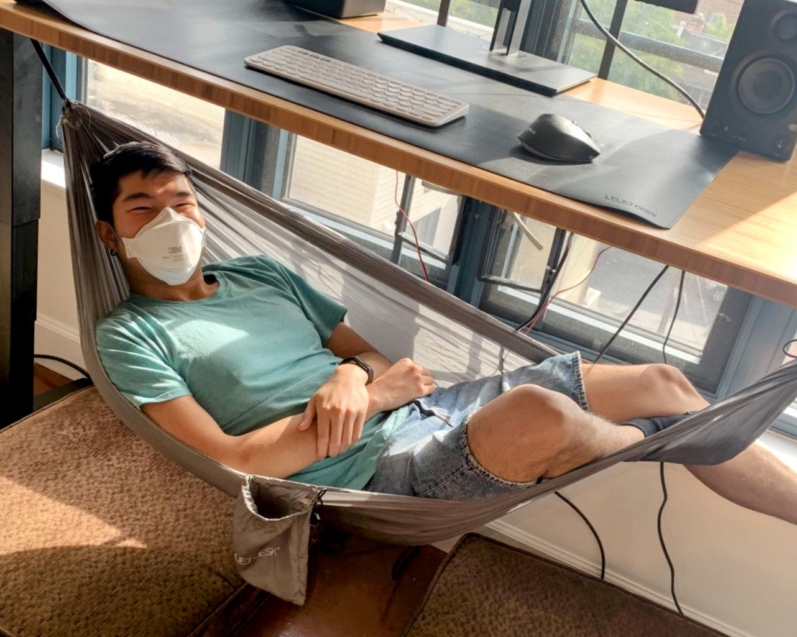

Today marks the one-year anniversary of my first-and-only Covid infection. (Knock on wood.)
365 days ago, I woke up with a fever. Within an hour, there it was. The aggressive red line I’d only ever seen in pictures, so thick it left no doubt whether it was Covid or not. Dispiriting as that was, after successfully avoiding infection for two years, it wouldn’t be until about a month later that I’d start to see just how much my life was about to change.
365 days later, I wish I could say, I’m fully recovered. But I can’t. The perhaps-luckiest long haulers do heal completely within their first year. And although I am nonetheless lucky on the full spectrum of Long Covid, I’m still somewhere in the vast and amorphous space in between sick and better that most young people never consider.
Recovery status aside — I am far enough into Covid recovery to know it’s already changed me forever, and not entirely for the worse!

I am choosing to mark my one-year milestone with a gratitude list. For the things I could’ve lost this year, but didn’t. For the things that changed, maybe in some ways for the better. For the things I even gained along the way.
On this day, I’m grateful for …
My body. I used to push my body so hard, as a result of extroversion, work, exercise, travel, and more. This year, I learned the importance of listening to and supporting my body as best I can. I nearly lost all of my health and quality of life this year, and this is the only body I’ll ever have. I honor and give thanks to my body’s resilience, for carrying me this far, and for continuing to heal through the biggest physical trauma it’s encountered in three decades.
My care team. This includes my physical therapist, my psychotherapist, my osteopath, my integrative medicine doctor, my cardiologist, my neurologist, my primary care physician, my lymphatic drainage masseuse, and others I’ve seen too. It took months to assemble the medical team I needed — a unique mix of qualities I value including direct lived experience with Long Covid, willingness to try unconventional treatments, availability and responsiveness, and openness to engaging back and forth as our collective scientific understanding of Long Covid evolves.
Family, chosen family, and friends. I really don’t know where I’d be without these people. They’re some of the most loving, generous, and unwavering people I’ve ever met. My mother, her partner, and my brother flew out from Southern California to DC to visit me and help take care of me. Members of my chosen family in DC and beyond have rotated to provide me at-home care, rides to medical appointments, drug and food drop-offs, and endless emotional support. Friends near and far have checked-in, offered companionship over Zoom, sent me delivered meals, and more. I am forever indebted to and grateful for each person who has shown up for me. It’s because of the care I’ve received from my people this year that I now understand what true love and interdependence look like.
Fellow long haulers and chronically-ill folks. How lonely this year would’ve been without the support of people who really get it. Who understand symptom flares, “crashes,” medical dismissal, and endless grief. Who understand the pain of being left behind by politicians, economists, and even people we think of as friends — at a time when we’re not done with Covid, not even close. This includes online groups like Body Politic, Long Covid Community, r/covidlonghaulers; as well as individual people who I’ve met in-person or online. I have so many Long Covid and chronically-ill buddies now, and I am grateful for each one.
Long Covid and other post-viral illness researchers. Like Akiko Iwasaki, David Putrino, Resia Pretorius, and Brian Walitt, who are investigating the causes, characteristics, mechanisms, and potential treatments of all of the diseases that may lie within the umbrellas of Long Covid, ME/CFS, POTS, and associated conditions. Of course, I also can’t forget the patient-led research efforts and researchers, such as the Patient-Led Research Collaborative, Hannah Davis, Lisa McCorkell, and Gina Assaf. I’m grateful for the daily work of these researchers, whose work literally generates hope and the possibility of a better future for people like me.
Public health communicators. Eric Topol, Lucky Tran, People’s CDC, and more. These people and groups have done an incredible job accessibly communicating through the various stages of the ongoing Covid crisis — not just translating up-to-date public health data in a way that the public can understand, but doing so in a way that really considers the protection of high-risk and most-impacted as an ongoing priority of public health policy and behavior.
Disability justice activists. Such as my dear friend Mia Mingus, as well as others like Alice Wong and Leah Lakshmi Piepzna-Samarasinha. Disability justice activists continue to teach me that long before Long Covid, disabled people for centuries and millennia have experienced what I am experiencing today. And the most recent cohort of newly-disabled people have a lot to be appreciative about for the existence of frameworks like disability justice to orient us toward the world as it could be. A world in which community care, interdependence, and access intimacy trump the status quo of capitalism, able-bodied convenience, and the appearance of “normal.”
And, of course, my readers. I appreciate your witnessing of my journey. I appreciate every message I’ve received, every time my blog has been shared with someone else, and the serendipitous connections my readers make me aware of. I hope that my words can help some of you who may be struggling with Long Covid or similar conditions as mine.
Because of this list, my heart is full today. To my body, to my people, to my readers, and to all those who choose to stand with us long haulers every single day — thank you.
Up next
It’s been awhile since I’ve posted. There’s a lot of ground I didn’t get to cover, in these past few months, that I’d like to write about. For example, I got microclot imaging done, which may shed light on my condition. I have hundreds of data points from my six-day research trial at the National Institute of Health. And finally, I still would like to update my readers around my POTS and my gut microbiome, subjects which I introduced here and here.